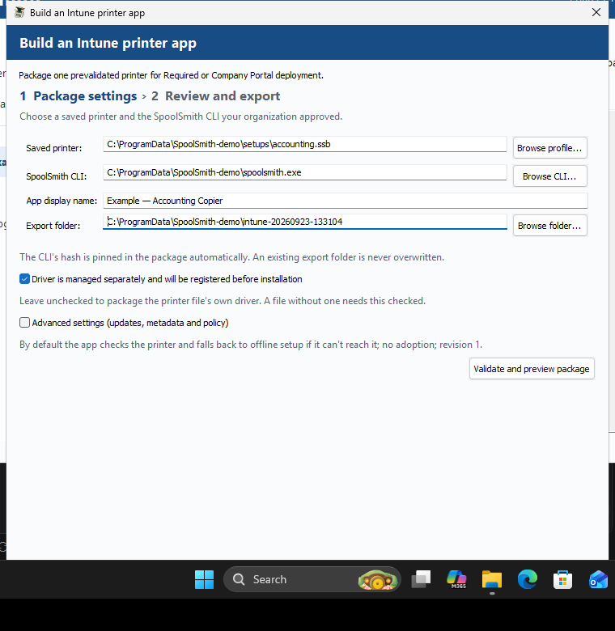

{kind=link}
Start where it works.
In This PC, select a supported network queue and copy it to an .ssb file. Include its driver files to bring those along too.
Printer setup, ready to repeat
One PC already prints.
Let the next one copy it.
Copy a working printer from one Windows PC to another — driver included — or find one on the network and save its settings. Review the plan before SpoolSmith changes your Windows printers.
Release notes & SHA-256 checksumFrom a saved profile to a real printed page. Discovery, setup, repeat setup, and physical printing verified with a Brother HL-L2315D.
What’s supportedThe desktop app
See what Windows already has, copy a working setup to another PC, or find a new printer. A lighter native interface keeps the settings and the review in reach.


Scan the network, enter a known IP, or open a copied printer. Saved setups offer editing, local status checks and bulk JSON export and import.

Inspect a printer or verify a copied bundle, explore the catalog, and read the action log without changing Windows.

Preview the change, inspect the full plan, then confirm. Changed options invalidate the preview; changed plans are rejected at execution.

Validate a profile and CLI into a reviewable Win32 app — install/uninstall/detect scripts and a README, hashes pinned. No tenant sign-in, ever.

Export every supported queue to its own file in one pass — with a driver option, a Stop control that keeps finished files, and results you can copy into a ticket.
From this PC to the next
Keep a working setup in a file you control. No account, hosted service, or printer management server required.
In This PC, select a supported network queue and copy it to an .ssb file. Include its driver files to bring those along too.
Move the file and SpoolSmith to the destination. In Add a printer, open the copied printer file. The bundle keeps its saved settings and optional driver payload together.
No installer needed for SpoolSmith itselfReview the queue, address and driver before confirming. SpoolSmith reuses matching settings, so applying the same setup again does not create a duplicate queue.
Administrator access required to apply changesBuilt for everyday IT
Repeated setup should be uneventful. SpoolSmith reuses a matching queue and port, and asks you to update the queue when its settings differ. In the desktop app, choose Update to match from your saved setups.
Need it gone? Remove the queue from its profile. Shared ports and drivers stay available to the printers that still use them.
> .\spoolsmith.exe add --profile profiles\office.jsonThe same setup, without another queue.
Start with one printer
Run the desktop app, or the same operations from PowerShell. The v0.7.4 Windows download includes both the desktop app and the command-line tool.
.ssb file. On the destination PC, run the app as administrator and open the file from Add a printer.The live check compares reported model evidence with the capture; it does not authenticate a unique device. Offline setup skips this check explicitly.
# On the source PC, as administrator
.\spoolsmith.exe printers
.\spoolsmith.exe copy "Accounting" accounting.ssb --include-driver# On the destination PC, as administrator
.\spoolsmith.exe apply accounting.ssb --dry-run
.\spoolsmith.exe apply accounting.ssbThe Windows ZIP includes two executables. Open spoolsmith-gui.exe for the desktop app; spoolsmith.exe is the command-line tool. No Go installation or build step is needed.
Explore installed printers, discover devices and save profiles as a standard user. Close and reopen the app with Run as administrator before applying Windows changes or copying driver files.
Keep the extracted app in a writable folder. Saved setups live in its profiles folder by default; use “Open another folder” to work with a different library.
Replace the example IP and driver name with yours. To find the driver’s exact name, run Get-PrinterDriver | Select-Object Name.
.\spoolsmith.exe profile capture 192.168.1.50 profiles\office.json --name "Office Printer" --driver "EXACT WINDOWS DRIVER NAME"
.\spoolsmith.exe add --profile profiles\office.json --dry-run
.\spoolsmith.exe add --profile profiles\office.jsonThe preview shows the setup. The next command asks you to confirm it.
Replace the example subnet with the network you’re working on. Discovery scans up to 256 addresses and lists printer candidates.
.\spoolsmith.exe discover 192.168.1.0/24Choose a candidate’s IP, then use “I know the IP” to save its profile. Discovery doesn’t choose a compatible driver for you.
Copy the saved profile to this PC and make sure its driver is installed. SpoolSmith checks the printer’s current model details against the capture.
.\spoolsmith.exe add --profile profiles\office.json --dry-run
.\spoolsmith.exe add --profile profiles\office.jsonMatching queue and port settings are reused. Your profile remains available for the next workstation.
A file for the job
One queue’s settings, captured model evidence and optional driver files. Open it from Add a printer on the next PC.
One printer’s settings and evidence. Reuse, edit or check it from Saved printer setups. Driver archives remain separate.
Export all saved JSON setups together, then import them into another folder. A collection is not a printer file and does not include driver archives.
Know what fits
SpoolSmith is an early, portable tool for repeatable network printer setup. Start with one known printer and validate its output.
What remains & validation prioritiesRequires the Windows Print Spooler and PrintManagement cmdlets. Copy supported TCP/IP queues, use a saved profile with a compatible Windows driver, or discover IPv4 candidates. USB queues, shared queues, IPP and LPR setup are outside the current workflow.
Discovery, profile setup, repeat setup and physical printing have been verified. Bundle driver export and staging were tested on one Windows 11 machine after removing its driver. A true two-PC transfer, printing through the bundle-staged driver and a live address change still need validation.
The Windows download includes desktop copy/apply, address changes, profile editing, local status, bulk JSON transfer and offline setup. The screenshots show a hosted Windows test run. Automatic family resolution covers Brother HL-L2xxx and HP LaserJet Pro M4xx; broader hardware testing is still ahead.
Turn a validated profile into a reviewable Win32 app — install/uninstall/detect scripts and the exact commands to paste into Intune — from the CLI or the desktop wizard. Entirely local: no tenant sign-in, no upload, no assignment. Uploading and assigning the package in Intune stays a manual step. How it works
SpoolSmith does not fetch OEM drivers automatically — bring a compatible installed driver, a copied bundle with driver files, or a supported local archive. The download is a portable ZIP with unsigned application executables.
A useful place to start
Follow a workflow, check the command reference, or read the validation record behind the claims.
Bundle a working queue, bring its driver and apply the saved setup.
ReferenceDiscovery, profiles, offline setup, local status and advanced options.
Release evidenceNative Windows checks, release verification and known limits.
Deployment guideExport a reviewable Win32 app from a validated profile, CLI or desktop.
Before the next printer call
You can discover printers, inspect settings and save profiles without elevation. Run SpoolSmith as administrator to change Windows printers or export driver files. The app does not restart itself with elevated permissions.
Yes, with a previously validated profile or copied bundle and its compatible driver available. Choose offline setup in the review options. The plan states that live identity was not checked; local status does not prove that the printer can be reached or can print.
Matching settings are reused. Conflicting settings stop a normal add; use an explicit update after reviewing the new plan. Shared ports and drivers are retained on removal. If an operation is interrupted, an unused port can remain.
A JSON collection includes saved settings, evidence and package references, but no driver archives. Copy those separately and preserve their relative paths. Use a copied .ssb printer with its driver included when you want a single transferable file.
Yours to keep, inspect, and improve
Free, MIT-licensed software for people who do the printer setup.
Download SpoolSmith v0.7.4